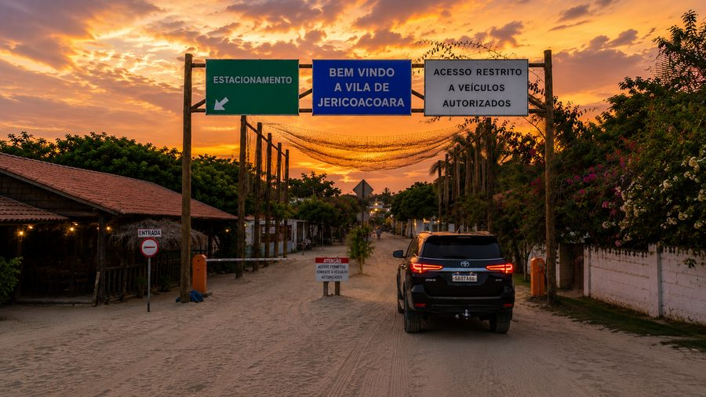
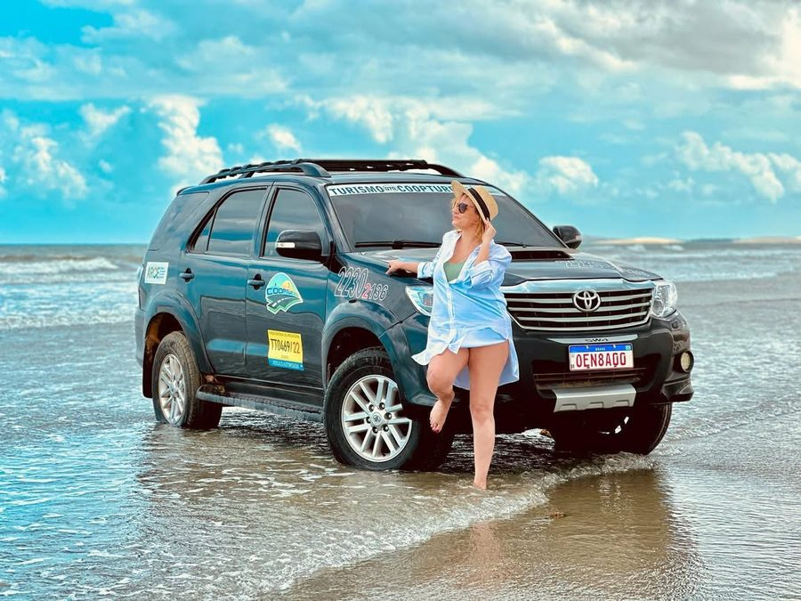

Transfer para Jericoacoara
Veículo 4x4 direto para a porta da
sua pousada, saindo de Fortaleza
ou do Aeroporto regional (JJD)
Opções de transfer
De Fortaleza ou do Aeroporto Regional, direto até
sua pousada em 4x4.

Transfer
Aeroporto JJD Jeri
Rápido e direto do Aeroporto Regional até sua pousada em Jeri — ideal para quem voa direto para a região.
Duração
~50 minutos
Frequência
Todos os voos
Modalidade
Privativo ou compartilhado
Embarque
Aeroporto Regional de Jericoacoara (JJD), Cruz

Transfer · via asfalto
Fortaleza Jericoacoara
O caminho mais tradicional, com conforto e praticidade, saindo de Fortaleza direto para a sua pousada.
Duração
~4h30
Frequência
Diária
Modalidade
Privativo ou compartilhado
Embarque
Hotel ou Aeroporto de Fortaleza (FOR)

Transfer · via praia
Fortaleza Jericoacoara
Uma experiência inesquecível em veículo 4x4, com paradas pelas praias mais bonitas do Ceará.
Duração
+8 horas
Frequência
Diária
Modalidade
Privativo 4x4
Embarque
Hotel ou Aeroporto de Fortaleza (FOR)
Dúvidas sobre o transfer
Aproximadamente 4 horas e 30 minutos, em veículo 4x4 exclusivo. O tempo pode variar levemente dependendo das condições de tráfego e da localização exata da sua pousada.
O Aeroporto de Fortaleza (FOR) fica a aproximadamente 4h30 de Jericoacoara de carro. O Aeroporto Regional de Jericoacoara (JJD), em Cruz, fica a apenas 50 minutos de transfer — muito mais rápido para quem voa direto para a região.
O transfer via asfalto é mais rápido (aproximadamente 4h30), segue pela rodovia e tem opção privativa ou compartilhada. O via praia é uma experiência mais longa (mais de 8 horas), 100% pelo litoral cearense em veículo 4x4 privativo, com paradas para curtir a paisagem no caminho.
No transfer privativo, o veículo é exclusivo para o seu grupo — sem paradas intermediárias. No compartilhado, o veículo pode carregar outros passageiros e fazer paradas adicionais. Fale com a gente pelo WhatsApp para ver qual opção é melhor pra você.
Jericoacoara fica dentro de um Parque Nacional com vias de areia. Carros comuns não conseguem acessar a cidade — só veículos 4x4 têm capacidade para trafegar pelas dunas e avenidas de areia até a sua pousada.
Sim. O desembarque é feito na porta da sua pousada em Jericoacoara, sem trocas de veículo no meio do caminho.
Sim! Realizamos o transfer de retorno também — de Jericoacoara para Fortaleza ou para o Aeroporto Regional (JJD). Entre em contato pelo WhatsApp para organizar sua ida e volta.